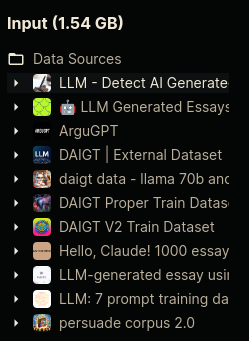

LLM - Detect AI Generated Text
This is kaggle competition to classify texto into AI generated or as a human write.
Some useful informations:
- Dataset: 10,000 essays with some written by students and some generated by large language models (LLMs).
- Objective: Determine if an essay was generated by an LLM.
- Essays respond to seven prompts, with students instructed to read source texts before writing.
- Training set: Comprises essays from two prompts, mostly student-written with a few LLM-generated examples.
- Hidden test set: Comprises essays from the remaining prompts.
- Reminder that it's a Code Competition: The test data (
test_essays.csv) is dummy data, to be replaced with a full test set of 9,000 essays (both student-written and LLM-generated) during scoring.
Data
For test and train (test|train)_essays.csv:
id: unique identifier for the each essayprompt_id: identifies the prompt the essay was writtentext: the essay text itselfgenerated:- 0 = written by a student
- 1 = generated by an LLM
For the file train_prompts.csv:
prompt_id: unique identifier for each promptprompt_name: the title of the promptinstructions: the instructions given to studentssource_text: the text of the article(s) the essays were written in response to, in Markdown format.
There is others information about the source_text:
Significant paragraphs are enumerated by a numeral preceding the paragraph on the same line, as in 0 Paragraph one.\n\n1 Paragraph two.. Essays sometimes refer to a paragraph by its numeral. Each article is preceded with its title in a heading, like # Title. When an author is indicated, their name will be given in the title after by. Not all articles have authors indicated. An article may have subheadings indicated like ## Subheading.
Generated text from LLMs
There is a huge number of available generated text from kaggle, I'll try to use those because the original training dataset has just 3 essay generated by the AI model.
Please check this notebook if you want to use too.
